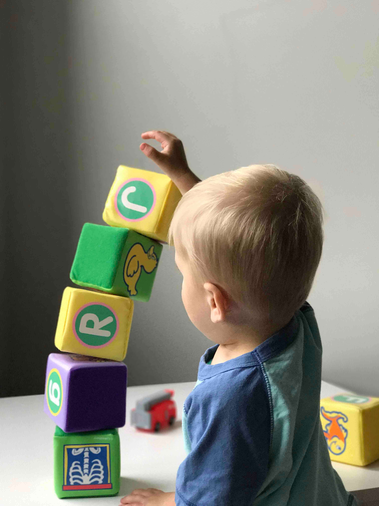

Your student filing cabinet in the palm of your hands.
Your student filing cabinet at your fingertips.
- Organize student data.
- Keep track of students' successes, reports, academics, ect.
- Upload images to go with data.
- Transfer/Inherit files for every school year.
- Control data privacy.

No more looking if a file is in the filing cabinet!
Our mission is to provide you with a database where administrators, teachers, social workers, or board members can access student data without hassle for important conferences. Be it a parent-teacher conference or IEP meeting, the International School Social Worker webapp is there for you to log your student's milestones while also maitaining confidentiality.